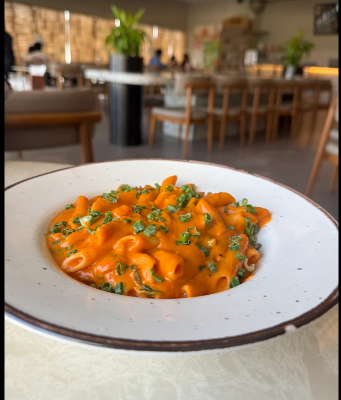

Hello everyone, my name is Dipesh. I am big foodie. I like to travel different places try new cuisine, or give a vendor with no customer a chance to impress me. I like to be surprised although i hate onions so sometimes my options get limited. Join my food journey and see what type of food is in the world.
